Bachelor’s Degree in Electrical Engineering
Telkom University Purwokerto
UNDERGRADUATE STUDENTI am Denis Adityan Rohmansyah, an Electrical Engineering student interested in fiber-optic networks, computer networking, electrical installation, and developing practical technology solutions.
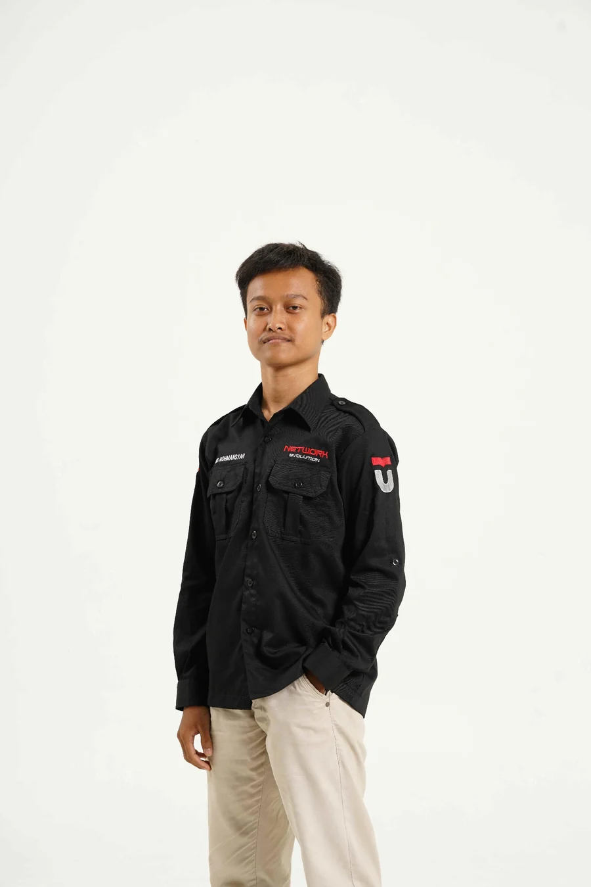
Learning, building, testing, and continuously growing in engineering.
I am an Electrical Engineering undergraduate at Telkom University Purwokerto, enrolled in 2025. My interests include network infrastructure, fiber optics, computer networking, electrical installation, and electronics.
Through technology projects and organizational experience, I aim to strengthen my technical skills and build practical, user-friendly solutions.
Connect on LinkedIn ↗Telkom University Purwokerto
UNDERGRADUATE STUDENTSMKS Telekomunikasi Sandhy Putra Purwokerto
VOCATIONAL HIGH SCHOOLJunior High School
JUNIOR HIGH SCHOOLAreas of interest and skills I aim to keep developing.
Developing IoT-based energy monitoring solutions using microcontrollers, sensors, and real-time dashboards.
ENERGY MONITORINGFiber-optic installation and splicing, along with an introduction to optical network testing.
CERTIFIED COMPETENCYAn interest in computer networks, cabling infrastructure, and connectivity.
NETWORK INFRASTRUCTUREAn interest in electrical installation and the application of safe working practices.
ELECTRICALAn interest in electronic components, circuits, and applying electronics to technology solutions.
CIRCUITS & SYSTEMSExploring digital solutions through interface design and application logic development.
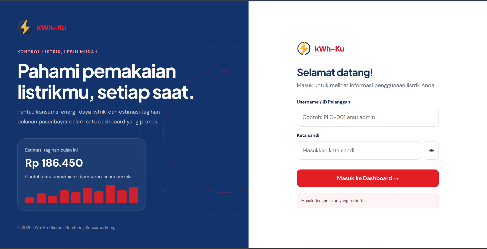
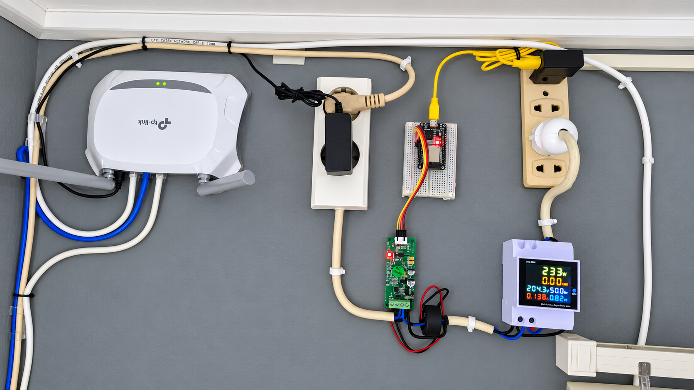
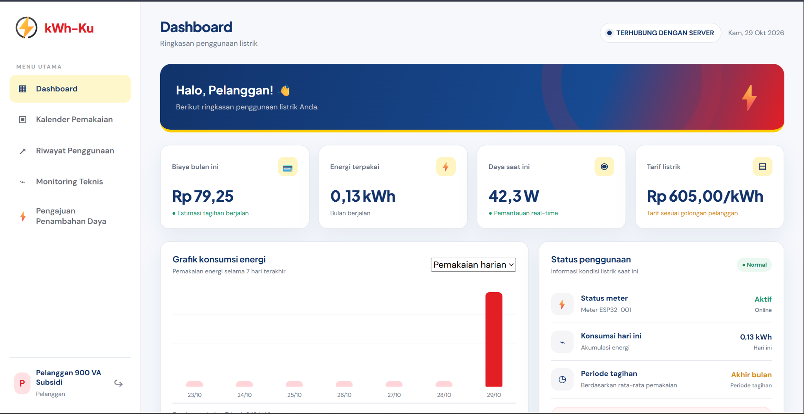
An IoT-based electricity consumption monitoring system using an ESP32, a current sensor, and the Google Sheets API to monitor prepaid and postpaid electricity usage.
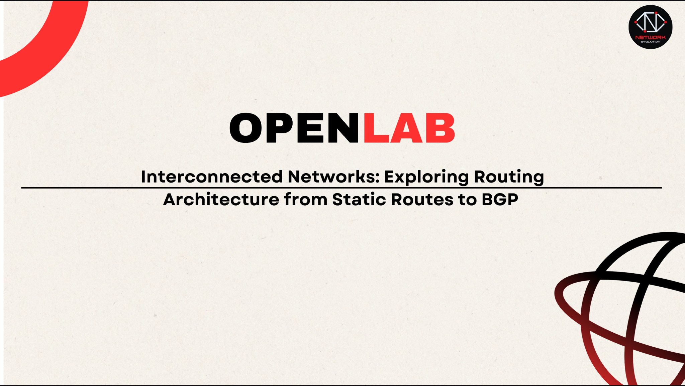
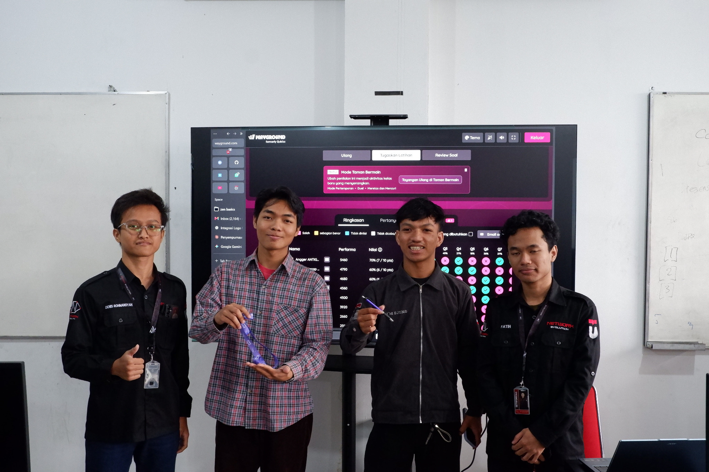
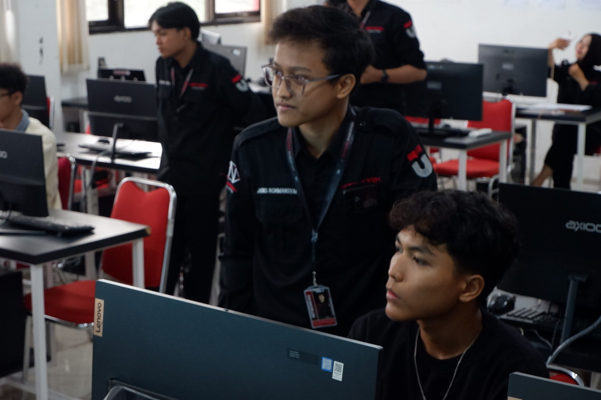
Speaker at a Network Evolution Open Laboratory session exploring interconnected networks and routing architecture, from static routes to Border Gateway Protocol (BGP).

Digital attendance management
A digital attendance system for managing staff attendance and events, featuring user roles, QR-code attendance, event schedules, and attendance summaries.
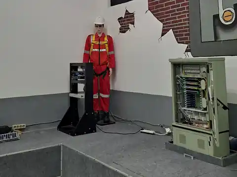
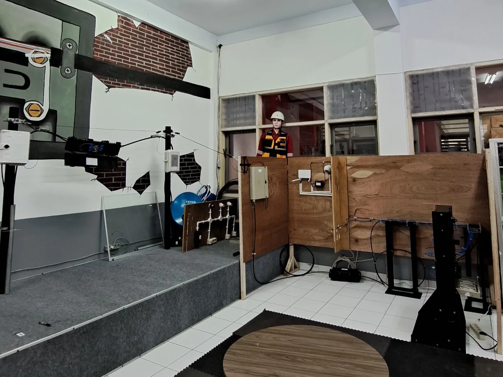
Documentation of fiber-optic network installation and the practical training environment in the Fiber Optic Laboratory at SMK Telkom Purwokerto, featuring network cabinets and optical distribution equipment.

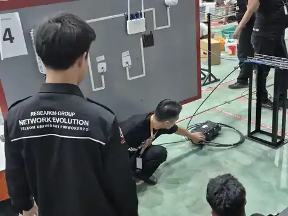
A community service program providing guidance and technical mentoring to strengthen students’ competencies and practical readiness, especially those preparing to participate in the Student Competency Competition (LKS).
My competition journey in Information Network Cabling.
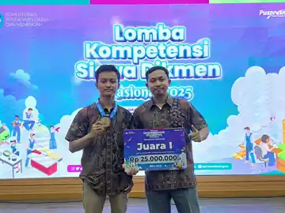
Competition field: Information Network Cabling.
View national certificate ↗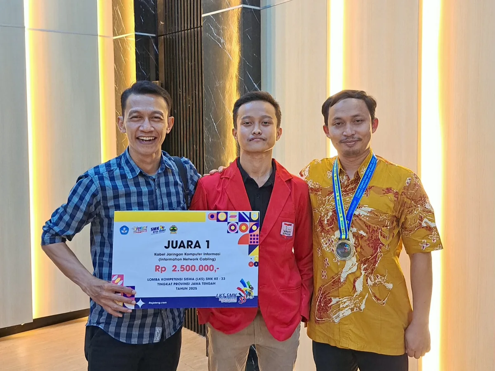
33rd Vocational High School Student Competency Competition · Information Network Cabling.
View certificate ↗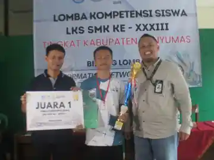
Vocational High School Student Competency Competition · Information Network Cabling.
Year not specified.Achievements are presented based on the certificates and documentation provided. Event photos are included as supporting visual evidence.
Organizational experience and skills development.
Network Evolution
Organizational experience as a Human Resources Staff member.Open to professional connections, collaboration, and learning opportunities in engineering and technology.
Send an email ↗